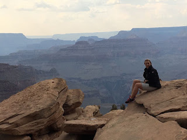
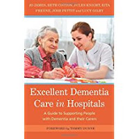

 |
| Georgeanna at the Grand Canyon: Sept 7th 2017 |
{kind=link}
A year ago today (Sept 9th) I posted An
Apology for Absence. September 8th had been a crisis
day: bewildering, a nightmare, the terror muffled only by my slowness to catch
on – every time that I realised the full extent of the danger to my daughter’s
life was the moment when that particular immediacy had passed and we were into
the next phase of risk. “An estimated
10-15% of patients die before reaching the hospital. Moreover, mortality rate
reaches as high as 40% within the first week, and about 50% die
in the first 6 months”. Or, as Wikipedia puts it “The death rate for SAH is
between 40 and 50 percent but trends for survival are improving. Of those
that survive hospitalization, more than a quarter have significant restrictions
in their lifestyle, and less than a fifth have no residual symptoms
whatsoever.”
I hope you will have realised by the photo heading this post
that Georgeanna has made into the “less than a fifth” group. Did I ever really doubt
it? I don’t know – sitting with her in the hospitals, in the ambulance, watching her, talking
to her, deciding mutually that we were going to switch off the
phone and not read past sentence one of NHS Choices (Choices...??) “A subarachnoid haemorrhage is an uncommon type of stroke
caused by bleeding on the surface of the brain." STOP. DON'T READ "It's a very serious condition
and can be fatal.”
By 2330 in the evening of September 9th 42 hours
after the initial “thunderclap headache”, when I was finally home and remembering the blogspot, Georgeanna had come
through a miraculous operation in which a catheter was inserted into her groin
and guided up through the femoral artery to the burst aneurysm. A number of
small platinum coils, each of them approximately twice the width of a human hair
and varying in length, had been passed through the catheter, into the ruptured
vessel, packing it full. There were still real dangers – called "vasospasms" -- but I
was ignoring them. I was Charlie in the Great Glass Elevator and they were Vermicious Knids – they weren’t having MY daughter. Not now her aneurysm had
been bunged full of platinum coils, shutting it off from its desperate attack on
her brain (and her life).
This life-saving procedure – endovascular coiling -- had
been developed by Dr Guido Guglielmi in the early 1990s and was only fully
licenced for use in the middle of the decade. Before then the treatment
was “proper” brain surgery: a piece of her skull would have been removed, then the
aneurysm would have been clipped, a much more delicate and dangerous operation
-- “more like a blood sport than a calm and dispassionate technical exercise,”
says surgeon Henry Marsh in his brilliant book Do No Harm. (Here’s an extract http://lithub.com/aneurysm/)
This was the operation “akin to bomb disposal work” that initially inspired Marsh to
become a brain surgeon in the 1980s – before Dr Guglielmi took so much of the
intensity away.
Later last year, I was chatting with a distinguished
(retired) eye surgeon at a Christmas lunch. I mentioned the relief of
discovering that Georgeanna’s ruptured aneurysm could be coiled by a
radiologist, not “hunted down” for clipping by the neurosurgeons. My companion made
some wry comment that it was that sort of thing that shocked his profession –
brain surgery performed by a radiologist? It was the monkey taking over from
the organ grinder! Henry Marsh makes a similar point: “All the skills that I slowly and painfully
acquired to become an aneurysm surgeon have been rendered obsolete by technological
change.” (It's better for the patient, he concedes.)
Previously I’d probably have tended to assume that the
main thrust of medical innovation would be making interventions more
extraordinary, more hi-tech, specialist and expensive but Dr Guglielmi's coiling is an example
of down-skilling, making the risky and remarkable become (almost) mundane. I
realise now that there are many more innovations of that nature. Next weekend
Nicci and I have been invited to present the principles of Johns Campaign at
the Royal Society of Medicine’s Innovations Summit. That’s what inspired this
month’s title – I have to pinch myself, just as I did when I walked up the
steps of the Royal College of Nursing to address an audience of end-of-life
professionals. WHAT AM I DOING HERE?
{kind=link}
The splendour of the Grand Canyon, the scientific distinction of our fellow speakers at the Innovations Summit , the professionalism of delegates of the Gold
Standards Foundation are eclipsed (for me) on the
totally-awe-inspiring-and-emotionally-overwhelming scale by a
great hospital at night time that happens to contain someone as dear as your
daughter. That's how I feel about Queen's Hospital. Romford, the specialist neurosurgery hospital where Georgeanna was taken for treatment.
Because I’d been “off duty”
from my emotionally dependent mother in the week before Georgeanna’s emergency (I’d been recovering
from eye surgery: GA had been doing the essential bed time stint) I couldn’t again abandon Mum (92 then, mixed dementia complicated with mental health issues,
very vulnerable and volatile). I couldn’t install myself by GA’s bed for
the duration of hospital visiting hours. Anyway, there were others of her family and
her many friends who wanted a share in that space. So I pleaded with the ward sister of the High
Dependency Unit to allow me to come late in the evening, once Mum was safely tucked up, to sit silently in the whirring, clicking, blinking semi darkness holding Georgeanna's hand and
feeling glad she was alive. There are pieces of music on my car CD that will for ever encapsulate that feeling
of driving up to that bright lit building in the darkness knowing that it
was the scene of innumerable human dramas.
Of course I thought of Nicci Gerrard's and my John’s Campaign as I found my
way from the lofty atrium. through the colour themed corridors to the Acute
Stroke unit and I imagined what our somewhat amateur “Carers Welcome” posters would look like, sellotaped to the ward doors. I felt embarrassed at our hubris – that we unqualified women had set ourselves to
change an aspect of the culture of this great institution, the NHS, to which I was so
profoundly indebted.
Yet I will never forget how much those late evenings with Georgeanna meant to me. Georgeanna is in her thirties, she's a survivor,
her cognition is unimpaired, even by this potentially devastating event. But we were shaken and vulnerable. I think we both needed that time.
I looked
across the ward to Miriam (not quite her real name) an elderly Sinhalese lady, distressed and mumbling incoherently. I
noticed how different she was when her family were beside her. She was not
necessarily calmer but she was more herself, more communicative and more
confident. She knew her family understood her and she was telling them how
afraid and uncomfortable she was. Miriam was living with dementia and now a brain tumour
had been discovered -- benign or malignant was yet to be discovered but her prognosis was not good. Miriam's family were affectionate
and numerous: some had flown from India to support her through this crisis. They were running some sort of informal rota and spilled over into
the lounge outside, but always sticking to the official visiting times. I thought it was a pity that they hadn’t been
encouraged to spread their companionship further into the long hours of
the night. Not just for her sake, I thought that it would help Georgeanna sleep
better when I left.
Often, when I am at home, safely with my computer, I ask
myself how it is that we have handed over the right of access to those who are
closest to us at their time of greatest need? Hospitals are public spaces. There
should be no restrictions as long as we behave appropriately and act always in
the best interests of the patients. When I was there in that overwhelming
building, however, I was a suppliant, my daughter’s life was in their hands. I didn’t do
as much as drop a JC leaflet anonymously in the PALS office.
{kind=link}

Next week we will be joined on the RSM platform by a nurse who also believes in change. Jo James works at Imperial College Healthcare Trust in London – in the hospitals that have become familiar to many of us through the recent TV series. The first time Nicci and I went to St Mary’s Paddington to meet Jo, I was shocked by its crowded complexity of the place and felt acutely nervous. But Jo is lead nurse for dementia across the Imperial College Healthcare Trust and nothing daunts her. Since our first meeting she and her colleagues have written a book Excellent Dementia Care in Hospitals. One of its main recommendations is that medical staff must discover and use people’s strengths. These are very often in their personality, in aspects of their life experience and in the people who are closest to them. It was obvious, as I watched Miriam interacting with her family, that they had a real effect on her well-being and resilience. And where would Georgeanna be now if she had not happened to be staying with us on the morning of her collapse, and if Francis, who is not her father but has known and loved her since she was ten years old, not been alert to that single cry for help as the thunderclap headache struck? Not perched jauntily above the Grand Canyon, perhaps?
So think of Nicci, Jo and I, next Saturday at the RSM Innovations Summit two medically unqualified writers and a
single nurse. Monkeys challenging the organ grinder?
Of course not. The passionate high level expertise of Mr Henry Marsh, the
technical brilliance of Dr Guido Guglielmo will never be undervalued or obsolete, and neither will the calm consistent care of the nurses who were checking
Georgeanna and Miriam’s vital signs every four hours, reading the dazzling array of
monitors that surrounded each bed, dispensing the life saving medications. But
we, their families, mattered too as we did our best to help our loved ones gather their strength and express
their inmost fears. A full formal acknowledgement of that role is all the innovation that we need.
{kind=link}
I think it was Jo who put me in touch with Geraldine
Rodgers, a dementia nurse consultant who lives in Essex and normally works in
the North East London Foundation Trust, a mental health partnership. Geraldine
is an outstanding nurse and has recently been working on secondment
in Queens Hospital, Romford. And yes, you’ve guessed it, just this month the
John's Campaign "Carers Welcome" posters will be starting to find their way onto
those ward doors.